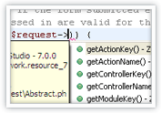
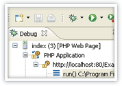
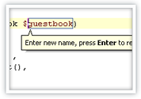
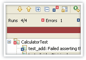
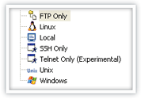

PHP Editor and File Management
Code Analysis & Quick Fix,Quick New File Creation, Code Formatter...
 |
PHP Debugging
Integrated PHP/JavaScript, Debugging, Firefox / IE Toolbars, Profiler...
 |
|
PHP Refactoring
In-place Refactoring (Smart Rename), Extract Variable / Method, Move Files and Folders...
 |
PHP Unit Testing
Code Assist, Test Case / Suite Code Generation, Test Results Visual Support, PHP Unit Reports...
 |
Remote and Virtual Systems
VMware Workstation integration, SSH, FTP, SFTP...

|